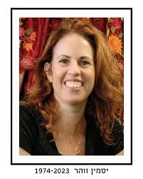

נחל עוז
זוהר יסמין ז"ל
חברת קהילת נחל עוז
סיפור חיים
יסמין זוהר ז״ל נולדה ב־8 בדצמבר 1974 בקיבוץ נחל עוז, להוריה חיים ליבנה ז״ל וישראלה ליבנה ז״ל. היא הייתה בת הקיבוץ, גדלה בין שביליו, צמחה בו, והפכה לחלק בלתי נפרד מה־DNA המיוחד של נחל עוז.
יסמין הכירה את יניב זוהר, שהגיע לקיבוץ כסטודנט והתגורר בנחל עוז. בין השניים נרקמה אהבה, ובהמשך הם נישאו ובנו את ביתם בקיבוץ. נולדו להם שלושה ילדים: קשת, תכלת ואריאל אברהם.
משפחת זוהר הייתה משפחה מלוכדת, חמה ומחייכת; משפחה שאהבה את הארץ ואת נחל עוז, וידעה לראות ולקבל את השונה. יניב תיעד בעדשת המצלמה את חיי הקיבוץ והעוטף, ויסמין הייתה הלב הפועם של הבית - אם מסורה, חכמה, חמה, חזקה ומלאת אהבה.
יסמין הייתה אמא לביאה לשלושת ילדיה. היא השקיעה בהם, דאגה להם, ליוותה אותם, ראתה כל אחד מהם לעומק, והייתה נוכחת מאוד בחייהם. היא הייתה גאה בקשת, תכלת ואריאל, והעניקה להם בית מלא אהבה, ביטחון, קבלה וחום.
במקביל לחיי המשפחה, יסמין הייתה אישה מקצועית, חכמה וחדה. היא ניהלה את ועד ארגון הסגל האקדמי במכללה האקדמית ספיר, ודאגה במסירות לרווחת המרצות והמרצים. מי שעבדו איתה תיארו אותה כראש גדול, עמוד השדרה של הוועד והלב הפועם בו - אישה בעלת לב ענק, סבלנות, יכולת הקשבה והכלה, חוכמה, יצירתיות ונאמנות גדולה.
יסמין למדה לתואר שני בחינוך, וסיימה אותו בהצטיינות. עבודת התזה שלה עסקה בביטויים רגשיים של מורות ומורים בהשתלמות בנושא קונפליקטים עם הורים. היא רק החלה את המחקר ולא הספיקה להשלים אותו. לאחר הירצחה התאגדו חבריה ללימודים כדי להשלים את המחקר ולהגישו כתזה שתישא את שמה.
חברותיה, עמיתיה ובני משפחתה זוכרים אותה כאישה מלאת חיים, חכמה, חריפה, תקתקנית, נעימה, רצינית ואחראית. אישה שהחיוך היה חלק בלתי נפרד ממנה, שידעה להקליל את האווירה, לדאוג לפרטים הקטנים, לאהוב, להכיל ולהעניק תחושת ביטחון.
היא הייתה אשת שיחה מרתקת, אישה של חמלה, שמחה ואהבה. מבטה המפוכח על העולם, לצד חיוכה הכובש והאופטימיות שהקרינה, היו מסימני ההיכר שלה.
שבעה באוקטובר והימים שאחריו בבוקר שבת, שמחת תורה תשפ״ד, 7 באוקטובר 2023, חדרו מחבלים לקיבוץ נחל עוז במסגרת מתקפת הטרור הרצחנית על יישובי עוטף עזה.
תחילת המתקפה תפסה את אריאל, בנה הצעיר של יסמין, כשהוא בריצת בוקר. לבקשת יסמין, יצא הרבש״ץ אילן פיורנטינו ז״ל לחלצו מקו האש, ופינה אותו לביתו יחד עם משפחתו. בכך ניצלו חייו של אריאל.
באותו הזמן שהו יסמין, בעלה יניב ובנותיהם קשת ותכלת בממ״ד בביתם. במשך שעות ארוכות היו נצורים בבית. יניב ניסה להיאבק ולמנוע את כניסת המחבלים לממ״ד.
לאחר שעות של אימה פרצו המחבלים לבית המשפחה ורצחו את יניב, יסמין, קשת ותכלת.
גם אביה של יסמין, חיים ליבנה ז״ל, נרצח באותו יום בביתו בנחל עוז.
יסמין זוהר נרצחה בביתה בקיבוץ נחל עוז בכ״ב בתשרי תשפ״ד, 7 באוקטובר 2023, יחד עם בעלה יניב ובנותיהם קשת ותכלת. בת 48 הייתה במותה.
היא הובאה למנוחת עולמים בבית העלמין גני אסתר בראשון לציון, לצד בני משפחתה.
זיכרון ומילים מהלב יסמין הותירה אחריה את בנה אריאל אברהם, משפחה רחבה, חברים, עמיתים וקהילה שלמה שאיבדה אישה אהובה ומיוחדת.
חברותיה כתבו עליה שהייתה אישה מלאת חיים, בעלת חיוך שלא מש מפניה, אמא נהדרת ואדם שהשרה אהבה, שקט וחום. אחת מחברותיה כתבה: ״תודה שהיית את ולימדת אותי כל כך הרבה על אהבה ואמהות, תמיד בשקט ובחיוך. אוהבת ומתגעגעת.״
גיסתה כתבה עליה שהייתה הרוח החיה בכל אירוע, חכמה, חדה, חריפה ותקתקנית, אמא למופת ואישה שכל מה שנגעה בו עשתה בצורה מיטבית ומקצועית. היא זכרה את השיחות, את הצחוק המתגלגל, את הארוחות ואת האהבה הגדולה שהביאה איתה.
עמיתותיה ממכללת ספיר זכרו אותה כעמוד השדרה של ועד הסגל, אישה בעלת לב ענק, יכולת הקשבה והכלה, חוכמה ויצירתיות, ובעיקר חברת אמת.
יסמין נזכרת כאישה שהיא השראה: חכמה, חמה, חייכנית, אוהבת אדם, מלאת חמלה ושמחה. אישה שידעה לדאוג לפרטים הקטנים, לראות את האנשים סביבה, להוביל באחריות, ולאהוב את משפחתה בכל ליבה.
יחסרו מאוד ראייתה המפוכחת על העולם, החיוך הכובש שלה, והאופטימיות שהפיצה סביבה.